시험 조건에 따른 경보 시점 차이
팩 시험의 L2·L3 선행시간에는 차수별 차이가 나타났다. 센서 위치, 가스 포집 양상, 열적 변화와 경보 시점의 관계는 개별 시험의 원시 데이터에 근거하여 분석해야 한다.
JOINT RESEARCH / EV FIRE SAFETY
고속도로 전기차 화재 예방 및 진압 기술 개발
열화상·가스 복합센서 계측 및
열폭주 조기 경보 분석
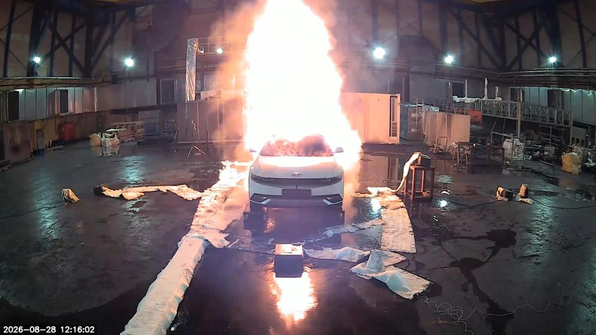
본 연구과제는 고속도로 전기차 화재의 조기 감지와 진압 기술 개발을 목적으로 한다. 배터리 팩 및 실차 전소시험에서 열화상·가스 센서의 반응을 계측하고, 열폭주 발생 시점에 대한 경보 선행시간을 분석한다. 복합센서와 상방향 주수장치를 연계한 화재 대응체계 구축을 전체 과제 범위로 한다.
실차 시험 · 1-of-n 융합 결과
실차 시험 · 1-of-n 융합 결과
가스 모듈 8기 + 열화상 카메라 6대
계측 시스템은 C++ 기반 장치 수집 계층과 Python 기반 관제·관리 서버로 구성된다. 열화상 카메라 SDK와 가스 센서에서 수신한 데이터를 처리하고, 알고리즘의 판정 결과를 센서 데이터와 함께 DB에 저장한다. 실험 데이터는 알고리즘 개발 기관에 전달하며, 제공받은 알고리즘을 관제 서버에 적용한다.
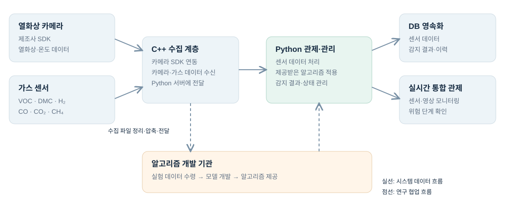
배터리 팩 시험과 실차 시험에서 열화상·가스 센서를 이용하여 화재 진행 중 데이터를 수집하였다. 배터리 팩 주변에는 거리와 높이를 달리한 관측 지점을 배치하고, 열화상·가시광 카메라로 온도 분포와 시험 상황을 관측하였다. 취득 데이터는 파일 단위로 정리·압축하여 알고리즘 개발 기관에 전달하였다.
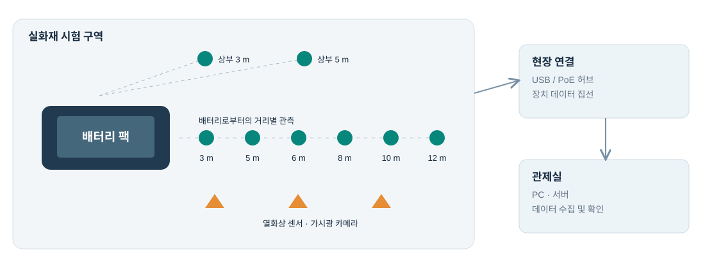
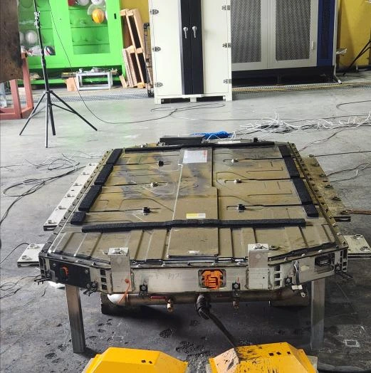
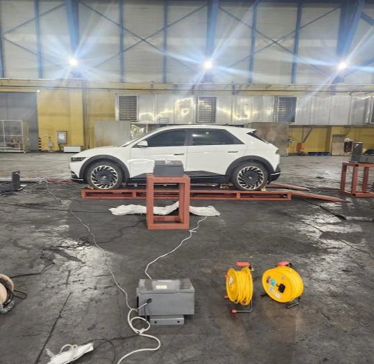
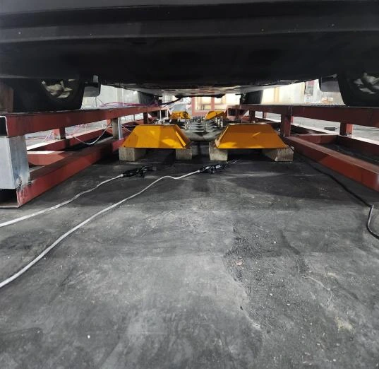
현장 카메라·센서 설치 및 연결
실험 중 열화상·가스 데이터 확보
수집 데이터 파일 정리·압축 후 개발 기관 전달
기관에서 제공받은 알고리즘을 관제 서버에 적용
조기 경보 모델은 가스 6종과 열화상 온도에서 추출한 특징을 입력으로 사용한다. XGBoost 분류기는 초기 가스 변화를 이용한 L2 경고 판정을 담당하며, L3 위험 단계에는 배터리 가스의 기준선 대비 상승을 확인하는 규칙을 적용한다. 모델 개발은 협력 기관에서 수행하였다.
센서 관측값으로부터 1초마다 변화량·기울기·동시 상승·누적 변화 등 23개 특징을 산출한다. 초기 600초 동안 가스 채널별 평균과 표준편차를 계산한 뒤 기준선을 고정하여 이후 변화를 평가한다.
기본 상태.
초기 10분은 기준선 수집 구간으로 경보를 발생시키지 않는다.
XGBoost 경고 확률 0.6 초과 상태가 30초 연속 유지되면 발보한다.
배터리 가스 z-score 10 초과 상태가 30초 연속 유지되면 발보한다.
발보 시각은 연속 유지 조건이 완료된 시점으로 기록하며, 한 번 상승한 경보 단계는 유지한다. L2 확률의 적용 범위는 구현 정의에 따라 구분할 필요가 있다.
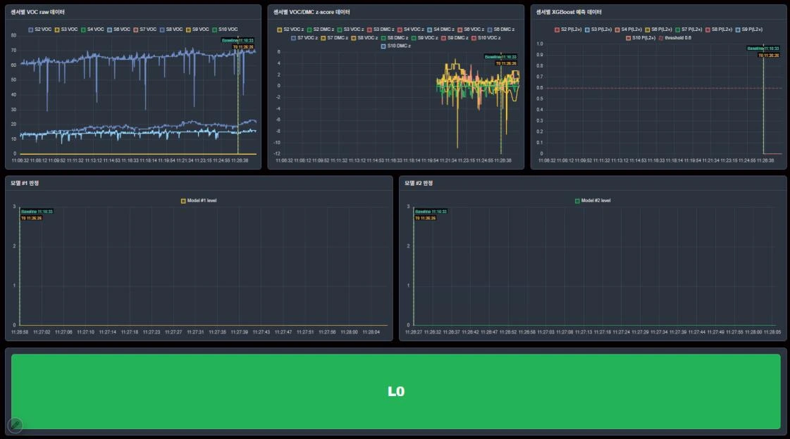
배터리 팩 시험 4개 차수와 실차 시험의 L2·L3 발보 시점을 열폭주 발생 시점과 비교하였다. 경보 선행시간은 열폭주 발생 시각에서 경보 발보 시각을 뺀 값으로 정의한다. 아래 수치는 공동 연구에서 보고된 시험 결과이다.
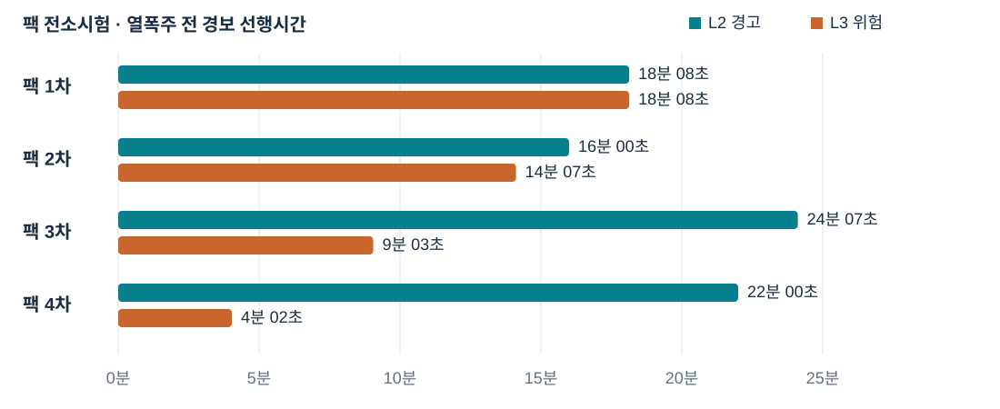
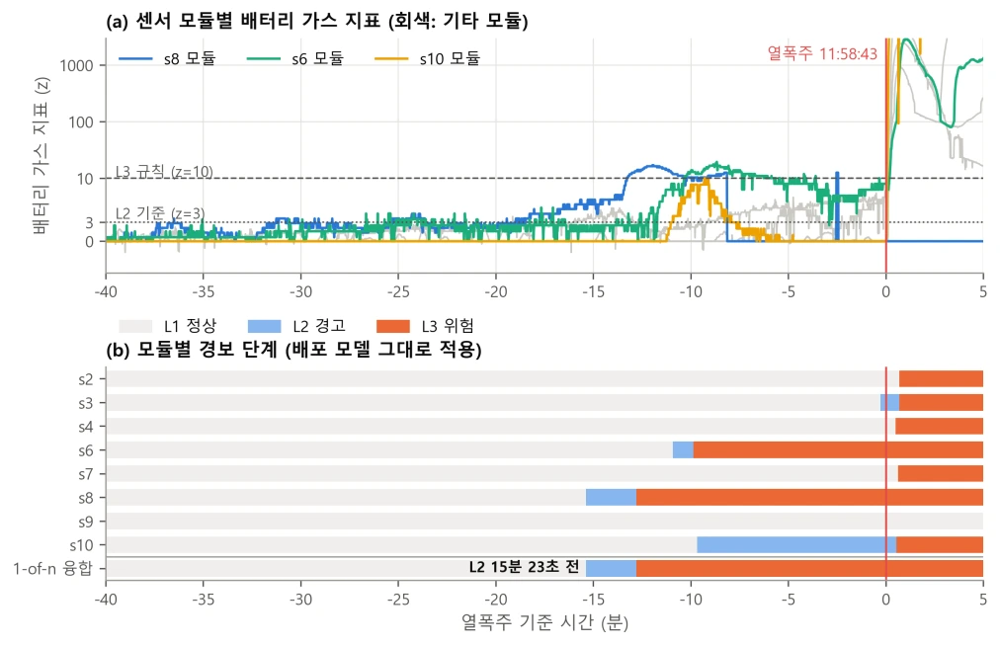
| 구분 | L2 경고 | L3 위험 |
|---|---|---|
| 팩 1차 | 18분 08초 | 18분 08초 |
| 팩 2차 | 16분 00초 | 14분 07초 |
| 팩 3차 | 24분 07초 | 09분 03초 |
| 팩 4차 | 22분 00초 | 04분 02초 |
| 실차 · 2026.08.28 | 15분 23초 | 12분 47초 |
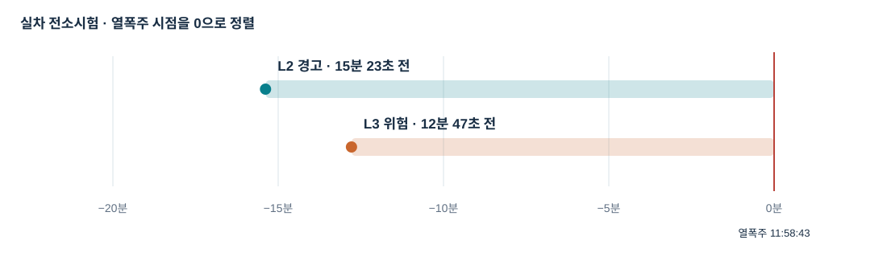
L2 선행시간은 16분 00초–24분 07초, L3 선행시간은 4분 02초–18분 08초로 나타났다. L2와 L3의 시간 간격은 시험 차수에 따라 차이를 보였다.
2026.08.28 실차 시험에서 1-of-n 융합 기준 L2는 15분 23초, L3는 12분 47초의 선행시간을 보였다. 이는 해당 시험 조건에서 확인된 결과이다.
증거 융합 방식은 가스와 열화상의 이상 신호를 독립적으로 평가하고, 증거의 종류·강도·지속 시간을 결합하여 Stage 1–3을 결정한다. 앞 절의 XGBoost 기반 L1–L3 모델과는 기준선 구성 및 전이 조건이 다른 판정 체계로 구분한다.
가스 센서별 21개 특징과 카메라별 16개 특징을 이용해 이상을 평가하고 대표 신호로 통합한다. 가스 기준선은 시험 시작 전에 구성하며 시험 시작 시점에 고정한다.
Stage 1은 현재 이상을 포착한다. Stage 2·3은 가스 종류 수, 열화상 증거, 증거 강도 및 지속 시간을 조합하여 확정한다.
OR 조건이 5초 연속 성립하면 확정한다.
Stage 2 확정 후 다섯 경로 중 하나가 5초 연속 성립하면 확정한다.
가스 수는 센서 대수가 아닌 가스 종류 수를 의미한다. 증거를 모으는 시간창과 조건의 연속 유지 시간은 별도 조건으로 적용한다.
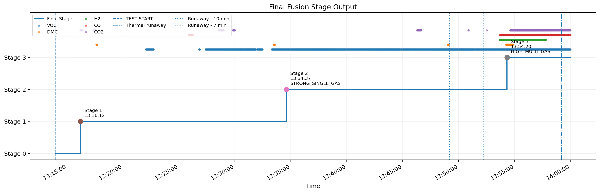
Test 1: Stage 1·2·3의 순차 진입이 기록되었다.
| 시험 | Stage 1 | Stage 2 | Stage 3 |
|---|---|---|---|
| Test 1 | 13:16:12 | 13:34:37 | 13:54:20 |
| Test 2 | 11:06:05 | 11:07:04 | 11:07:45 |
| Test 3 | 11:17:51 | 11:18:28 | 11:18:49 |
| Test 4 | 10:56:40 | 10:57:12 | 10:57:42 |
| Test 5 | 14:12:02 | 14:12:37 | 미탐지 |
Test 5에서는 Stage 3 미탐지가 기록되었다. 해당 시험은 Stage 2에 머물렀다. 최종 단계 미도달의 원인을 판단하기 위해서는 입력 센서의 반응, 증거 결합 조건 및 평가 구간에 대한 추가 분석이 필요하다.
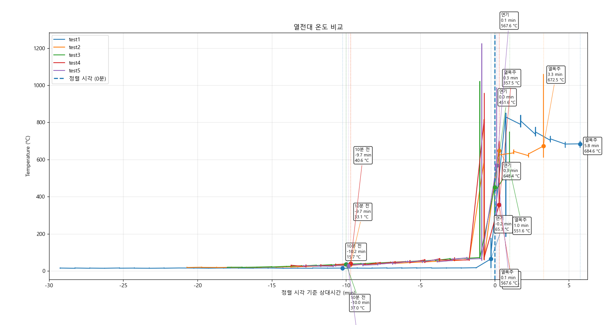
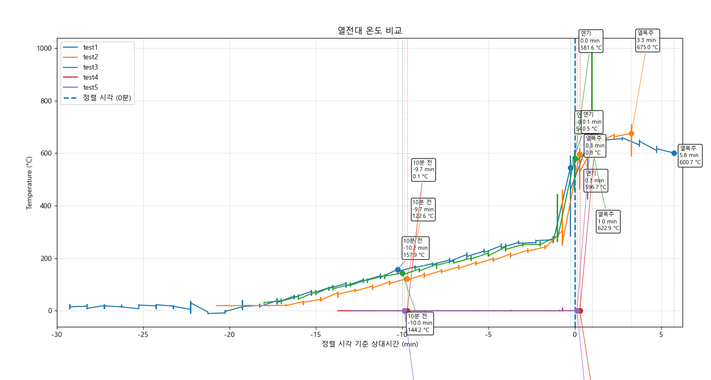
시험별 열전대 온도 변화 비교. 발열셀 Test 4·5의 수치는 단위와 측정 상태가 확인되지 않아 정량 비교에서 제외하였다.
팩·실차 시험에서 열폭주 이전의 경보 발생을 확인하였다. 다만 선행시간과 단계 전이 양상은 시험별로 차이가 있어, 센서 반응과 판정 조건을 함께 검토할 필요가 있다.
팩 시험의 L2·L3 선행시간에는 차수별 차이가 나타났다. 센서 위치, 가스 포집 양상, 열적 변화와 경보 시점의 관계는 개별 시험의 원시 데이터에 근거하여 분석해야 한다.
Stage 모델은 단일 신호의 이상뿐 아니라 복수 증거의 결합과 지속 여부를 판정에 반영한다. Test 5의 Stage 3 미도달은 입력 증거와 전이 조건을 대조하여 검토할 후속 분석 대상이다.
제시된 수치는 제한된 전소시험에서 보고된 결과이다. 운영 환경의 탐지율·오경보율을 평가하려면 정상 상황과 간섭 조건을 포함한 반복 검증이 필요하다. 경보 선행시간만으로 주수에 의한 열폭주 지연 효과를 판단할 수는 없다.
연구 요약 · 복합센서 기반 데이터 취득, 경보 알고리즘 적용, 감지 결과 저장·관제로 이어지는 연구 시스템을 구성하였다. 팩 및 실차 시험의 경보 결과와 증거 융합 모델의 단계 전이 결과를 각각 검토하였다.
이현재 · 시티아이랩
본 과제에서 계측·관제 시스템 개발과 현장 실험 데이터 확보를 담당하였다. 화재 예측 알고리즘의 개발은 협력 기관에서 수행하였다.
담당 업무
공동 연구